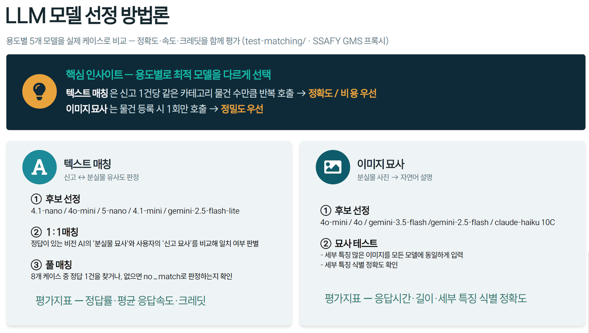
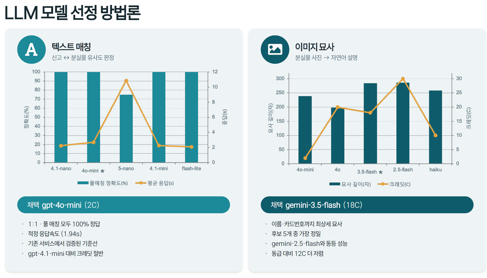

임베디드 시스템과 AI를 결합한 문제 해결에 관심이 있습니다. 화면 위에서 끝나는 결과물보다, 센서가 값을 읽고 모터가 실제로 움직이는 지점까지 책임지는 일을 좋아합니다. 그동안 센서 기반 제어, Computer Vision, ROS, 웹 서비스를 넘나들며 프로젝트를 진행했습니다.
안 되는 것을 바꿔가며 맞출 때까지 시도하기보다, 왜 안 되는지를 먼저 데이터로 확인합니다. 오동작하는 센서를 교체할 때도, 매칭에 쓸 모델을 고를 때도 판단 근거가 되는 수치를 만든 뒤 결정했습니다.
팀에서 의견이 갈리면 설득 대신 근거를 만들어 오는 편입니다. 드론 제어 방식을 두고 팀이 나뉘었을 때도 속도 제어와 위치 제어를 모두 구현해 안정성을 비교한 뒤 결론을 냈습니다.
인식과 제어를 노드로 분리해 끊기지 않는 제어 주기 유지
데이터시트를 보고 통신 프로토콜과 인터럽트를 직접 설계
로봇이 만든 데이터를 DB에 넣고 API로 꺼내 쓰는 층까지
C로는 ISR까지, C++로는 알고리즘, Python으로는 노드와 학습까지
데이터 수집부터 학습·튜닝, 실시간 추론 최적화까지
이슈 단위로 쪼개고 브랜치로 굴리는 팀 협업
임베디드 로봇 트랙. 로봇·임베디드 기반 문제 해결 역량을 프로젝트 중심으로 학습하고 있습니다. ROS 2 멀티로봇 협업, 비전 파이프라인, 자율주행 스택을 실제 하드웨어에 올려 검증했습니다.
차세대 통신 관련 행사 보조 및 학술발표회 참여. 6G, 저궤도 위성 통신, Wi-Fi 7, AIoT, 디지털 트윈 네트워크를 주제로 카드뉴스를 제작했습니다.
마이크로비트를 활용한 교육 봉사를 진행했습니다. 팀장으로서 활동 운영과 전체 총괄을 맡았습니다.
C 언어 기초를 학습하고 세미나 활동에 참여했습니다. 포인터와 메모리 구조에 대한 이해가 이후 임베디드 프로젝트의 기반이 되었습니다.
제어·회로·반도체를 비롯한 전자 전반과 컴퓨터구조, 운영체제를 함께 수강했고, 학년마다 이어진 설계 수업에서 회로 설계부터 구현·검증까지 직접 진행했습니다.
Samsung SW·AI Academy For Youth 15기 · 2026.06
멀티로봇 협업 기반 무인 분실물 센터
Samsung SW·AI Academy For Youth 15기 · 2026.06
국민대학교 창의공과대학 · 2024.06
facial emotion detect 노래 추천 알고리즘
국민대학교 창의공과대학 · 2023.01
ATmega128을 사용한 안전한 전동 킥보드 대여 시스템
B 취득 · C++ 응시 · 2026.03
A+ 취득 · C++ 응시 · 2026.02
Intermediate High · 영어 · 2025.06
분실물의 접수·인식·보관·반환 과정이 사람 손을 많이 타고 대기 시간이 길다는 점에 착안해, 사람 개입을 최소화한 멀티로봇 협업 관리 시스템을 구현했습니다. 2인 팀 프로젝트로, 컴퓨터 비전 · 매칭 알고리즘 · TurtleBot 자율주행을 담당했습니다.


카메라가 인식한 픽셀 좌표와 Dobot의 실제 좌표가 맞지 않아 피킹이 빗나갔습니다.
체커보드 캘리브레이션으로 카메라 파라미터를 보정하고, homography 변환으로 픽셀 중심을 Dobot 좌표로 매핑해 피킹 정확도를 확보했습니다.
매칭 임계값을 하나만 두면 애매한 후보에서 오매칭 또는 누락이 발생했습니다.
자동 매칭 임계값과 검토 임계값을 분리해, 애매한 구간은 관리자 검토로 넘기는 2단계 구조로 오매칭을 줄였습니다.
최소한의 안전 수칙을 지키지 않아 더 큰 사고로 이어지는 상황을 줄이기 위해, 안전 조건을 만족해야만 작동하는 킥보드 시스템을 구현했습니다.
ADC값 = (입력전압 / 기준전압 5V) × 1023measure_alcohol()에서 값을 읽고 100으로 나눠 정규화한 뒤 패킷 상위 4비트에 패킹| 비트 | 내용 | 판정 |
|---|---|---|
| 상위 4비트 | 알코올 값 | fromhelmet >= 0x40 → 음주 |
| 하위 1비트 | 헬멧 착용 여부 | fromhelmet & 0x01 → 착용 |
TIMER1_OVF — 1초 주기로 안전 상태 감시 + LCD 갱신 + UART 송신SIG_UART1_RECV — 수신 즉시 fromhelmet 갱신만 수행 (ISR 최소화)INT0 — 버튼. 라이징/폴링 엣지를 전환해 딜레이 없이 모터 ON/OFF| cnt | 상태 |
|---|---|
| 0 | 대기 |
| 1 | 헬멧 착용 확인 |
| 2 | 알코올 수치 확인 |
| 3 | 양손 파지 확인 |
| 4~6 | 주행 |
cnt = 0으로 되돌려 운행을 종료하고 요금을 정산터치 센서(TTP223)가 머리카락 때문에 헬멧 착용을 제대로 감지하지 못했습니다.
손(털 없음) → 이마(털 없음) → 앞머리 조금 → 앞머리로 완전히 덮음 순으로 조건을 바꿔가며 출력 로그(0/1)를 확인했고, 머리카락이 많을수록 0이 늘어나는 것을 확인했습니다.
원인은 TTP223이 임계값을 조절할 수 없는 디지털 출력이라는 구조적 제약이었고, 소프트웨어로는 해결할 수 없는 문제였습니다.
헬멧은 머리에 밀착 착용하는 것이 올바르다는 점을 반영해, 착용하는 동안 항상 눌린 상태가 유지되는 스위치 센서로 교체했습니다. 단위 테스트(손)에서는 통과했지만 통합 테스트(실제 헬멧 + 사람)에서 드러난 문제였습니다.
헬멧부와 킥보드부 간 데이터 전송 시 여러 값을 개별 전송하면 지연이 발생했습니다.
알코올 수치와 헬멧 착용 여부를 1바이트로 패킹하고, 1초 주기 타이머 인터럽트로 전송해 통신 횟수와 지연을 줄였습니다.
비행 중인 타겟 드론을 실내에서 안정적으로 인식하고 자동으로 추적하는 시스템입니다. GPS를 쓸 수 없는 실내 환경에서 절대 위치 추정 없이, 카메라가 본 상대 위치만으로 팔로잉을 구현했습니다.
detect_drone_success.py MY PARTvel_msg publishoffb_node.py MY PARTcent()| 축 | 판단 기준 | 반환 |
|---|---|---|
| X 전진·후진 | 바운딩 박스 면적 vs 기준 면적 (±768) | +1 전진 / −1 후진 |
| Y Yaw 좌우 | 박스 중심 x vs 화면 중심 (±32px) | +1 오른쪽 / −1 왼쪽 |
| Z 상승·하강 | 박스 중심 y vs 화면 중심 (±24px) | +1 위 / −1 아래 |
cnt에 누적해 임계값 15를 넘을 때만 고정 속도 0.2로 명령cnt를 리셋해 오인식으로 인한 급기동을 방지cnt_det — 탐지 0개면 +1, 1개 이상이면 50으로 리셋(호버링)cnt_det > 150, 약 100프레임 연속 미탐지면 det_msg = -1로 자동 착륙queue_size=10YOLOv5 추론이 제어 루프를 붙잡아 20Hz 주기가 흔들렸고, OFFBOARD 스트림이 끊길 위험이 있었습니다.
인식과 제어를 별도 ROS 노드로 분리해, 제어 노드가 인식 속도와 무관하게 20Hz를 고정 유지하도록 만들었습니다.
실내라 GPS 위성 신호가 차단되어 드론의 절대 위치를 알 수 없었습니다.
대안으로 RealSense depth 스트림을 활성화해 위치 추정을 검토했습니다.
하지만 이 시스템에 필요한 것은 "내가 (x, y, z)에 있다"는 절대 위치가 아니라 "타겟이 화면 중심에서 왼쪽 32px에 있다"는 상대 위치뿐이라는 점을 확인했고, 바운딩 박스만으로 충분해 depth와 SLAM은 쓰지 않았습니다.
드론 자체의 odometry는 PX4가 내부에서 IMU(가속도계·자이로)로 추정하며, 저는 그 위에서 MAVROS로 속도 명령을 전달하는 제어 레이어를 담당했습니다.
제어 방식을 두고 팀 내에서 위치 제어와 속도 제어 의견이 갈렸습니다.
위치 제어는 목표까지의 거리가 멀수록 입력이 커져 관성으로 오버슈트가 생깁니다. 속도 제한을 걸 수는 있지만, 타겟이 매 순간 바뀌는 팔로잉에는 매 순간 속도를 조절하는 방식이 더 자연스럽습니다.
두 방식을 모두 구현해 실제 안정성을 비교한 뒤 속도 제어를 채택했습니다.
드론의 불안정한 비행으로 통신까지 불안정해지는 문제가 있었습니다.
하드웨어를 물리적으로 더 단단하게 결합해 진동을 줄이고 통신 안정성을 높였습니다.
2024 하계통신학회 참가·발표. 가장 많이 받은 질문은 "왜 SLAM이 아니라 카메라인가"였고, 타겟 팔로잉이라는 목적에는 상대 위치 계산이 더 단순하고 적합하다는 점으로 답했습니다.
사용자의 표정에서 감정을 예측하고, 사용자 이력까지 반영해 감정 기반 음악을 추천하는 웹사이트를 구현했습니다.
초기 표정 인식 모델의 정확도가 낮았습니다.
기존 데이터셋이 서양인 및 흑백 위주라는 점을 먼저 분석했습니다.
동양인 비중이 높은 데이터셋을 추가하고, angry / neutral 클래스 수 불균형을 확인했습니다.
가중치 조정과 data augmentation(cut-out, crop, noise 등)을 적용해 모든 클래스에서 85% 이상의 정확도를 달성했습니다.
사용자 식별에 ResNet 계열 모델을 사용하면 재학습 시간이 길고 데이터도 충분하지 않았습니다.
K-NN을 활용해 적은 데이터로도 빠르게 사용자 데이터를 구축하는 방식으로 전환했습니다.